브라우저 대신 사이트의 요청을 복사해요
영상은 첫 화면부터 결론을 보여 줘요. 가운데 API Anything 아이콘 둘레로 Goodreads, Pinterest, Instagram, Rightmove, YouTube 같은 사이트 카드가 붙어 있어요. 어떤 사이트든 이 도구를 거치면 에이전트가 부를 수 있는 API가 된다는 그림이에요.
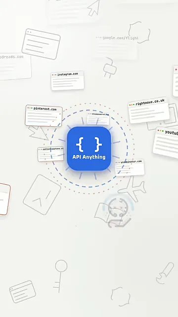
에이전트는 이미 웹사이트를 쓸 수 있어요. 브라우저를 열고 사람처럼 칸을 채우고 버튼을 누르는 방식이에요. 영상은 이게 느리고 비싸다고 짚어요. 화면 아래에 Search, Next, Book, Accept 버튼이 줄지어 있고, 'NOT CLICK ANY BUTTONS'라는 문구가 이 도구의 차이를 말해 줘요.
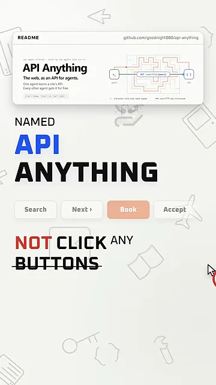
API는 페이지를 거치지 않는 뒷문이에요
영상은 API를 '뒷문'에 비유해요. 왼쪽 브라우저 창에는 'NOT LOADED' 표시가 붙어 있고, 오른쪽에 파란 문이 열려 있어요. 페이지를 띄우지 않고도 소프트웨어가 사이트에 데이터를 달라고 할 수 있다는 뜻이에요. 다만 대부분의 사이트는 이런 문을 따로 열어 두지 않아요.
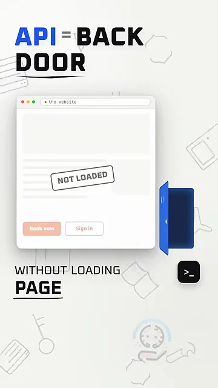
페이지가 몰래 보내는 요청을 복사해요
공개 API가 없어도, 검색할 때마다 페이지는 결과를 받으려고 자기 요청을 보내요. 영상은 Goodreads 검색창에 'piranesi'를 넣은 장면 아래에 네트워크 목록을 펼쳐 보여 줘요. 스크립트, 이미지, 폰트, 광고 요청 사이에서 파랗게 칠한 GET /book/auto_complete?q=piranesi 한 줄만 json을 돌려줘요. 이게 실제 검색 결과를 가져오는 요청이에요.
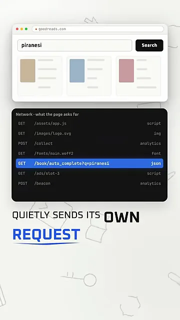
API Anything은 그 요청을 복사해 두고, 검색어 자리만 바꿔 다시 보내요. 화면 위쪽에서 q=piranesi가 q=hamnet으로 바뀌었고, 아래에는 dune, circe, hamnet을 넣은 세 요청이 모두 200(성공)으로 돌아왔어요.
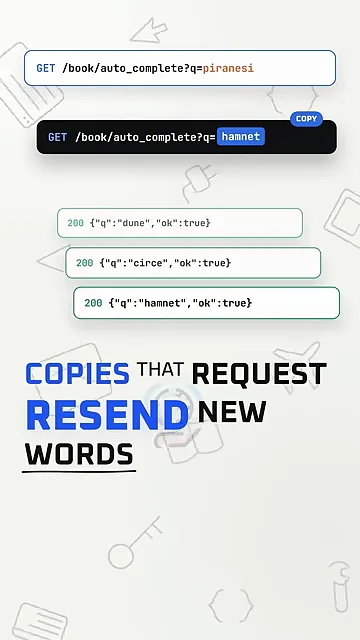
두 방식의 차이를 한 장으로 옮기면 이래요. 위쪽 브라우저 에이전트는 단계마다 화면을 다시 읽어요. 아래쪽 API Anything은 복사해 둔 요청 하나로 끝나요.
브라우저 에이전트와 겨뤄 보니
만든 사람은 두 방식을 직접 겨뤘어요. 같은 AI(Claude Opus 5.5)에 Google Flights 항공권 검색이라는 같은 일을 맡기고, 한쪽은 browser agent, 다른 쪽은 API Anything을 쓰게 했어요. 화면 위 'THE RACE' 창이 두 칸으로 나뉘어 각자 작업하는 모습을 보여 줘요.
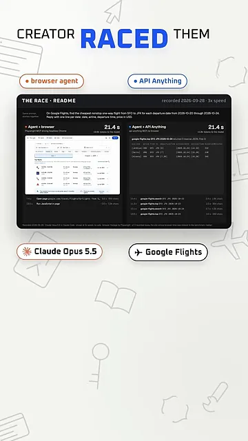
첫째, 속도
10월 20일부터 24일까지 다섯 날짜를 찾는 과제예요. 주황 막대('BROWSER')는 41.6초, 파란 막대('API ANYTHING')는 21.1초에서 멈췄어요. 내레이션은 반올림해 42초 대 21초라고 말해요.
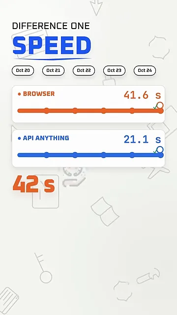
Goodreads에서 책 다섯 권을 찾을 때는 차이가 더 컸어요. 책 다섯 권 그림 아래에 browser agent 3 min, API Anything 30 s가 적혀 있어요. 맨 아래 벤치마크 표에서도 5권 기준 182.5초 대 30.5초로 나와요.
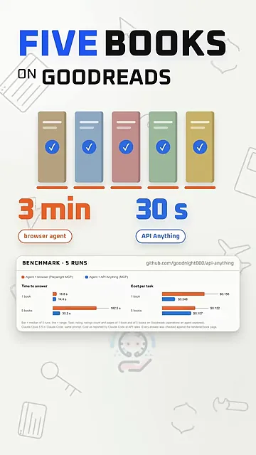
둘째, 읽는 양
브라우저 에이전트는 가격 하나를 찾으려고 페이지를 통째로 읽어요. 화면에는 Delta, United, Alaska 같은 항공편이 줄줄이 늘어선 긴 목록이 나와요. 이 목록 전체가 AI가 읽고 돈을 내는 토큰이 돼요.
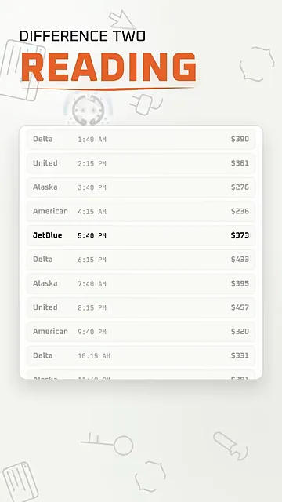
API Anything이 받는 건 날짜, 항공사, 출발 시각, 가격만 담긴 짧은 목록이에요. 아래 막대를 보면 browser는 46.7k 토큰, API Anything은 21.3k 토큰이에요. 절반이 안 돼요.
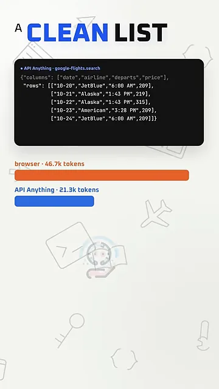
셋째, 비용
하루치 항공권 검색을 영수증처럼 보여 줘요. 왼쪽 브라우저 영수증은 46.7k 토큰, 12.9초에 합계 0.166달러, 5회 중앙값으로 17센트예요. 오른쪽 API Anything 영수증은 21.3k 토큰, 8.4초예요. 내레이션은 API Anything 쪽이 7센트였다고 말해요.
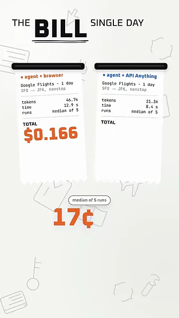
다섯 번 돌린 결과는 들쭉날쭉함의 차이를 보여 줘요. 주황 구간은 브라우저 에이전트가 10센트에서 24센트 사이를 오간 범위예요. API Anything은 7.3센트에서 7.7센트 사이에 머물렀어요. 화면 문구대로 'NEVER MOVED'예요.
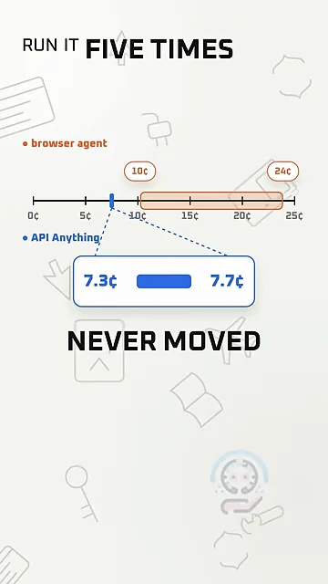
영상이 보여 준 숫자를 한 표로 모으면 이래요.
| 비교 항목 | 브라우저 에이전트 | API Anything |
|---|---|---|
| 항공권 다섯 날짜 검색 시간 | 약 42초 | 약 21초 |
| Goodreads 책 다섯 권 검색 시간 | 약 3분 | 약 30초 |
| 하루치 검색에 읽은 토큰 | 약 4만 7천 | 약 2만 1천 |
| 하루치 검색 비용(평균) | 17센트 | 7센트 |
| 5회 실행 비용 범위 | 10~24센트 | 0.5센트 안쪽 변동 |
| 정답 | 모두 맞힘 | 모두 맞힘 |
한 번 배우면 모든 에이전트가 써요
영상은 여기서 '많은 사람이 놓치는 부분'을 꺼내요. API Anything이 배운 사이트는 하나하나 MCP 도구가 돼요. 화면에는 Claude, OpenAI, Cursor, 터미널 아이콘이 MCP라고 적힌 멀티탭에 꽂혀 있고, 그 아래 flights.search, goodreads.getBook, youtube.search 같은 도구 이름이 붙어 있어요.
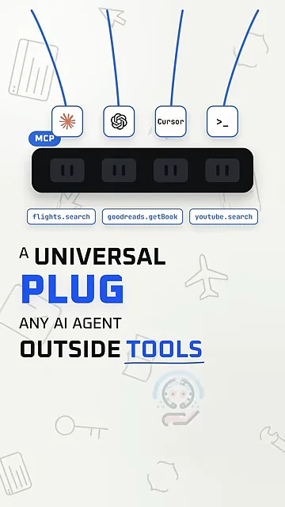
그래서 한 번 배운 사이트는 Claude Code, Codex, Cursor, Claude Desktop이 똑같이 써요. 영상은 이걸 '한 번 배우면 내가 쓰는 모든 에이전트가 갖게 된다'고 정리해요.
이미 작동하는 사이트는 14개라고 해요. 화면의 공유 카탈로그 목록에 Rightmove, Rotten Tomatoes, Steam, X(Twitter), YouTube가 보이고, 아래 칩에 Google Flights, YouTube, Amazon, Airbnb, LinkedIn이 있어요. 맨 아래 터미널에는 새 사이트를 가르치는 명령 api-anything learn 'https://lobste.rs/domains/{domain}'이 적혀 있어요.
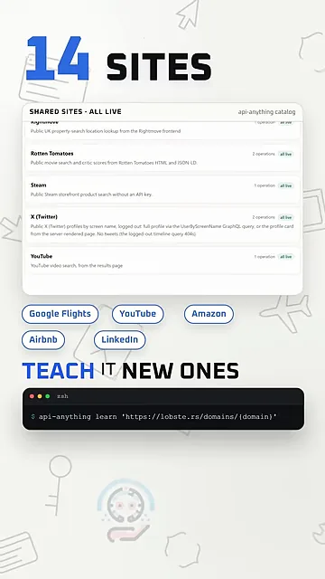
사이트가 바뀌면 스스로 고쳐요
사이트가 업데이트되면 복사해 둔 요청이 안 맞게 될 수 있어요. 화면 위 요청에서 x-build-id 값이 8f2a1c에서 93d0e7로 바뀐 게 그 예예요. 아래 네 단계가 고치는 순서예요. 답이 안 맞기 시작하면(It drifts) 다시 배우고(Re-learn), 다시 보내 본 뒤(Replay), 성공할 때만 저장해요(Save). 고친 결과는 카탈로그를 통해 다른 사용자에게도 나눠요.
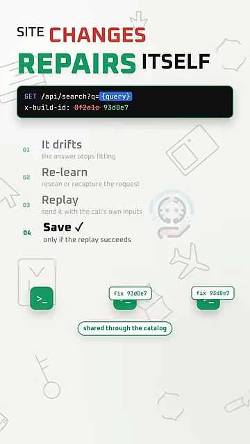
로그인과 주문은 안전하게
로그인 정보는 내 컴퓨터를 떠나지 않아요. 화면에서 열쇠, 쿠키, session 표시가 'your computer' 점선 안에 머물러 있고, 아래 'spec · cookie:ref'는 공유되는 명세에 쿠키 값이 아니라 쿠키를 가리키는 이름만 들어간다는 뜻이에요.
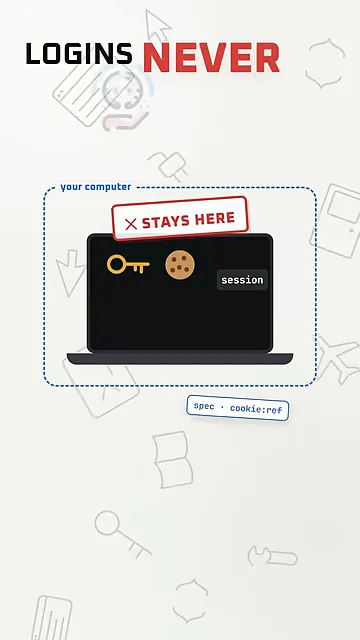
주문 같은 쓰기 작업에는 두 겹의 안전장치가 있어요. 터미널 첫 줄은 그냥 주문을 보냈다가 refused, not_sent로 거부당한 모습이에요. --allow-writes를 붙이면 ok, applied로 처리되고, 같은 주문을 곧바로 다시 보내면 duplicate로 막혀요. 오른쪽 9:59 타이머가 10분 동안 같은 주문을 거부하는 장치예요.
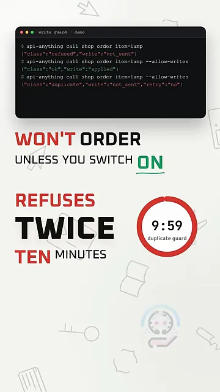
설치는 한 줄이에요
설치는 터미널에서 한 줄이면 돼요. 화면 위 터미널에 npx -y api-anything setup을 넣자 MCP 서버에 연결하고 Claude Code 옆에 체크 표시가 떠요.
npx -y api-anything setup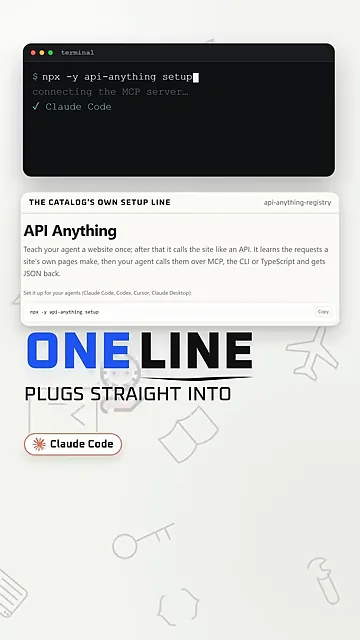
영상은 이 도구가 '더 빠른 브라우저'가 아니라고 못 박아요. 에이전트에게 없던, 효율적이고 비용이 덜 드는 뒷문이라는 거예요.